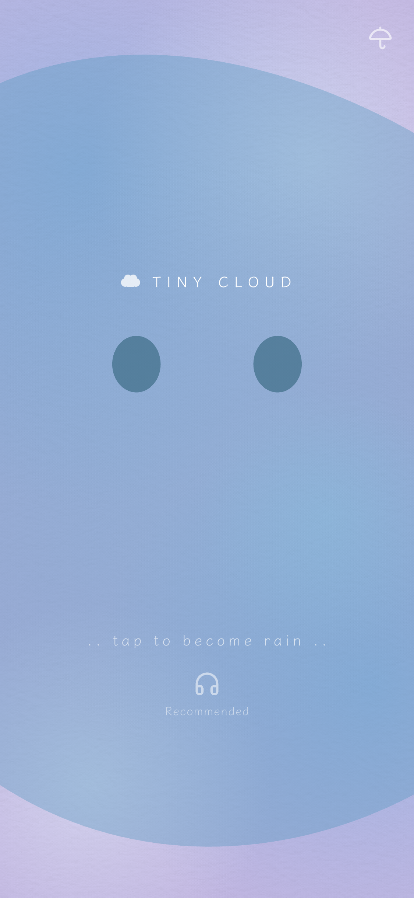
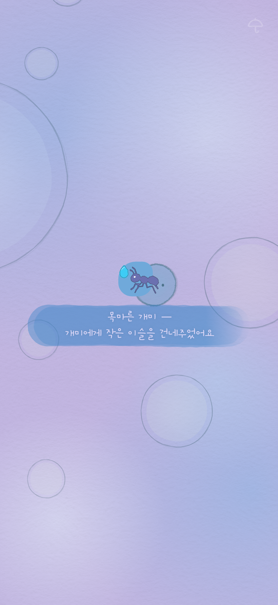
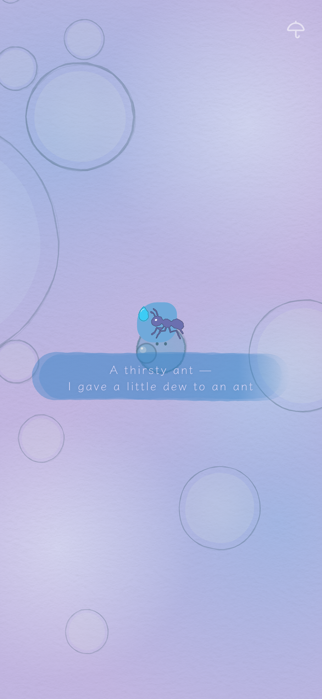
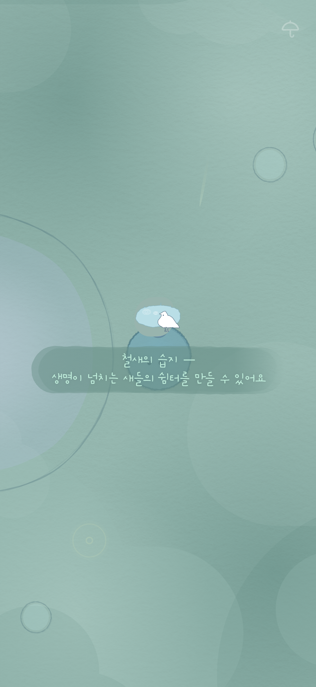
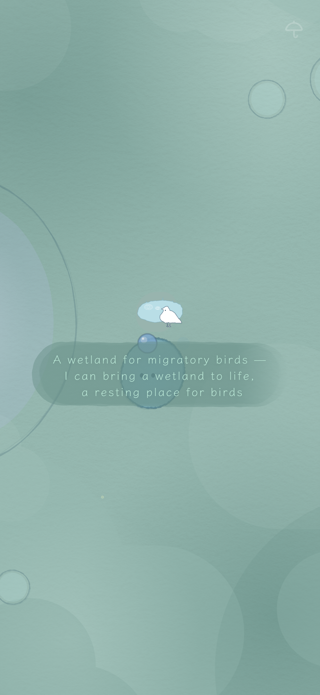
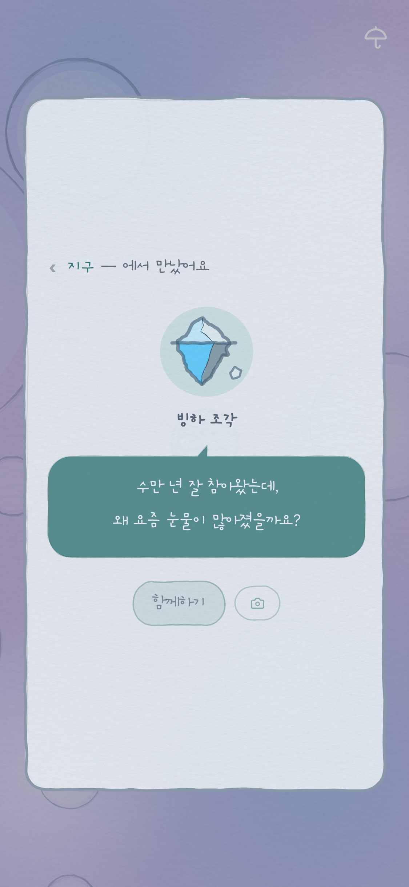
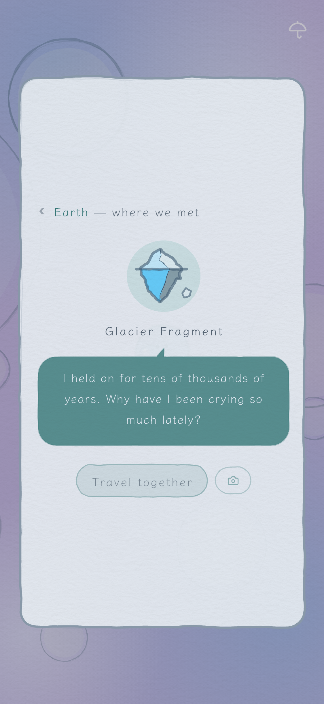
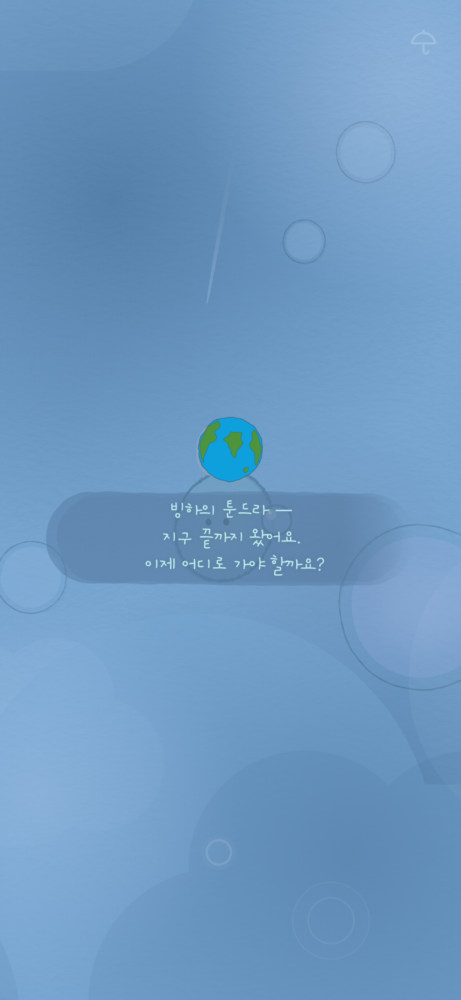
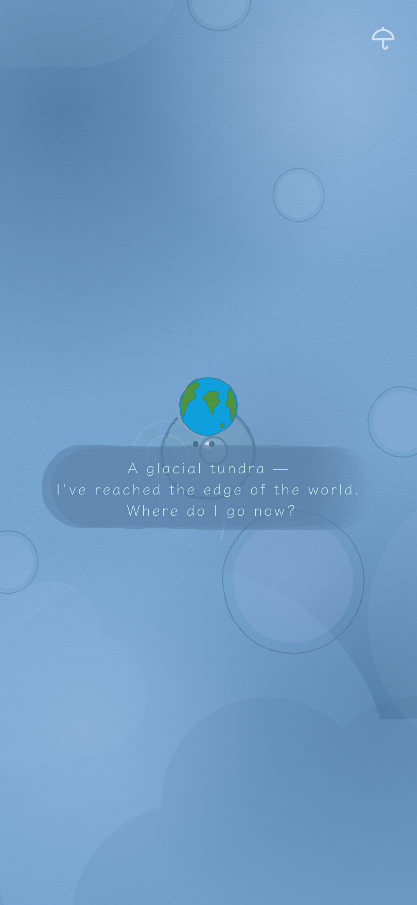

작은 물방울의 조용한 여정을 담은 힐링 게임입니다. One small droplet. One quiet, healing journey.
작은 물방울의 여정에
함께 하세요.
Tiny Cloud에서 당신은 작은 물방울이 됩니다. 주변의 물방울을 머금으며 자라, 조금씩 더 넓은 세계로 흘러갑니다. 거미줄에 이슬을 걸고, 개미의 갈증을 달래고, 씨앗을 적십니다. 여정이 이어질수록 넓은 세상의 메마른 강을 채우고 새들의 보금자리가 됩니다. 실패도 시간제한도 없으니, 서두를 이유가 없습니다. 여정이 짧아도 길어도 닿는 곳은 하나입니다. 어느새 당신은 비가 되어, 세상을 적십니다.
Come along on
a small droplet's journey.
In Tiny Cloud, you are a small water droplet. You gather the droplets around you and grow, drifting toward ever wider worlds.
Along the way, you hang dew on a spiderweb, ease an ant's thirst, wet a seed. And the farther you go, the wider your reach — filling a parched river, becoming a home for birds out in the wider world. No failure, no timer, no reason to hurry. Long or short, every journey arrives at the same place — before you know it, you have become the rain that waters the world.





도파민을 노리는 피드, 자극적인 AI, 끝없는 쇼츠.
신경을 잡아끄는 세상에서 잠시 벗어나고 싶다면, 종이에 그린 듯한 그래픽과 차분한 사운드 속으로 들어오세요.
지하철 한 정거장, 커피를 기다리며, 그리고 잠들기 전 — 하루의 작은 틈이면 충분합니다.
Dopamine-driven feeds, attention-hungry AI, endless short-form video.
If you want to step away from a world that keeps grabbing at you, step into a quieter one — drawn as if by hand on paper, carried by soft sound.
One subway stop, the wait for a coffee, and before sleep: a small gap in a long day is all it takes.
내 곁에서 시작한 여정은 동네로, 자연으로, 그리고 지구로 이어집니다. 골목을 씻고, 메마른 강을 되살리고, 새들의 쉼터가 되기까지 — 작은 물방울 하나가 닿는 곳마다 세상이 조금씩 달라집니다.
"수만 년 잘 참아왔는데, 왜 요즘 눈물이 많아졌을까요?" — 빙하 조각처럼 길 위에서 만난 친구들은 저마다의 이야기를 품고 있습니다. 마음에 맞으면 친구가 되어 물방울에 올라 함께 길을 갑니다. 그리고 때때로, 낯선 흔적이 곁을 조용히 스쳐 지나갑니다.
A journey that starts right beside you reaches the town, then nature, then the earth itself. It washes an alley, revives a dried-up river, becomes a shelter for birds — wherever a single droplet lands, the world shifts a little.
"I held on for tens of thousands of years. Why have I been crying so much lately?" — like the glacier fragment, friends you meet along the way each carry a story of their own. Click with one, and it becomes your friend, traveling with you. And now and then, a stranger's trace drifts quietly past.


눈을 어지럽게 하는 숫자도, 집중해서 읽어야 할 복잡한 메세지도 없습니다. 종이 질감 위에 손으로 그린 듯한 그래픽과 그 위를 잔잔히 물들이는 컬러, 마음을 편하게 만드는 사운드까지. 구간마다 달라지는 그래픽과 사운드로 지금 어디쯤 왔는지 별도의 UI 없이 알려줍니다.
세상을 돌아다니는 내내, 마음을 포근하게 하는 풍경과 빗소리가 곁에 머물러요. 헤드폰을 끼면, 그 세계가 조금 더 가까워져요.
No numbers to distract you, no dense text to work through. Hand-drawn lines on textured paper, ambient color washing gently over them, sound that puts you at ease. The graphics and sound shift with each zone, telling you how far you've come — no interface needed.
Wherever you wander, gentle scenery and the sound of rain stay close beside you. Put on headphones, and the world draws a little nearer.


문의사항이 있으신가요? Contact로 연락주세요. | Privacy Policy
Questions? Reach out via Contact. | Privacy Policy